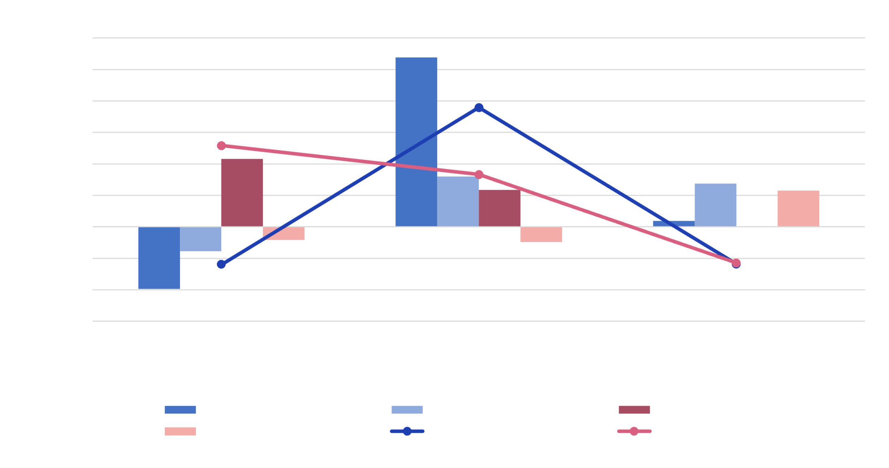
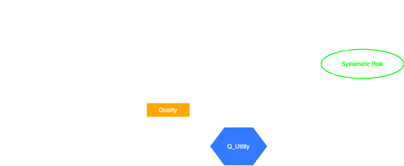
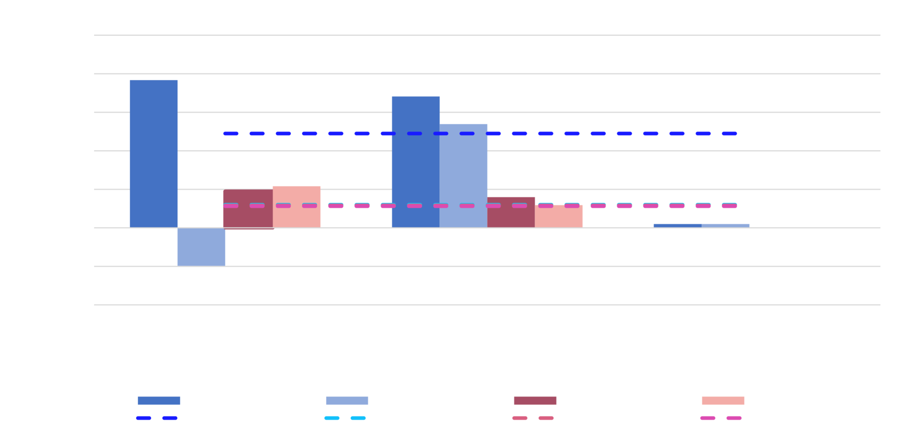
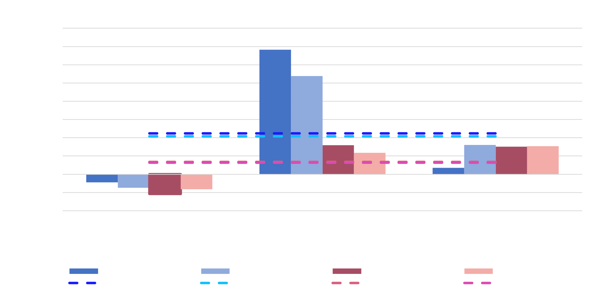

Semantic Bayesian Networks
Overview
Portfolio management is a complex decision-making process that aims to maximise return through the proportional allocation of investable capital into identified financial securities. The initial share evaluation phase involves identifying securities with suitable characteristics for inclusion in a portfolio. Portfolio selection is the successive phase of portfolio management and determines the optimal allocation of the set of identified shares in a portfolio. The stock market is a dynamic, non-linear and chaotic system. This requires investment professionals to assess and evaluate multiple factors, including contradictory information when deciding whether a share is suitable for inclusion in an investment portfolio. Intelligent systems incorporate Artificial Intelligence (AI) techniques to automate tasks and support human decision-making.
The INVEST system, proposed by Drake, is one such intelligence system that incorporates ontologies and Bayesian networks to support decision-making for share evaluation on the Johannesburg Stock Exchange (JSE). Ontologies are used to formally encode unstructured expert information into a representative, machine-understandable form, whilst Bayesian networks (BNs) are useful in the financial domain as it represents uncertain, ambiguous or incomplete knowledge.
Aims
In this research, we will empirically evaluate the INVEST system with varying conditions and test several system extensions.
- We will evaluate the base INVEST system as designed by Drake.
- We will conduct an ablation study to assess the relative importance of each component in the overall framework.
- We will extend the system to include systematic risk within the BN topology.
- We will test the stability and robustness of the INVEST system through a noise simulation component.
- We will integrate a deep learning predictive component into the INVEST system.
System Design

This submodule contains data loading and preprocessing utilities. Furthermore, this component has been extended to include a noise simulation component to facilitate system stress tests. This submodule performs the financial calculations of the system for each company, using financial ratios computation and thresholding logic. Financial ratios produce a numerical output, which the threshold component subsequently converts to discrete states required as input for the BNs. Insaaf Dhansay & Kialan Pillay The INVEST system is evaluated through back-testing using historical data for shares listed on the JSE. This submodule contains the validation procedures and depends on a Metrics submodule that houses risk and risk-adjusted return metrics. This submodule contains the logic to determine portfolio performance, which is calculated using risk and risk-adjusted return metrics. This component includes logic to facilitate the integration of a Graph Neural Network (GNN) with the BNs. Prediction is performed based on the close price data of each share.
The system is composed of six submodules within the INVEST
module. The INVEST module contains a Store class, which represents the central point of the system. Responsibilities include invoking the functionality of the 6 submodules and running different experiments dependent on user input. The package diagram on the left depicts the dependencies
between modules and submodules.
Submodules
Preprocessing:
Calculator:
Networks:
An Intelligent System for Automated Share Evaluation using Graph Neural Networks and Semantic Bayesian NetworksEvaluation:
Metrics:
Prediction:
Bayesian Networks
The Value Evaluation network is used to evaluate a share relative to price and determines whether a share is Cheap, FairValue or Expensive. The Quality Evaluation network is used to evaluate the quality of a share and determines whether a share is of a Low, Medium or High quality. Finally, The Investment Recommendation network incorporates the output of the Quality and Value BNs to reflect the decision process performed by investors: evaluating whether the price of a share is reasonable and the quality of the share, thus providing an investment recommendation for a specific share. This network produces a final Yes or No decision pertaining to system's assessment of the share's suitability for investment.
Experimental Design
- Dataset: The dataset used consists of price and fundamental data for 36 shares listed on the JSE between 2012 - 2018: 17 shares from the General Industrials sector and 19 shares from the Consumer Services sector.
- Benchmark: The JSE All-Share Index, General Industrials (JGIND) and Consumer Services (JCSEV) are the selected benchmark indices to validate the share evaluation recommendations for the respective sectors. The benchmark dataset includes FTSE/JSE General Industrials index data, FTSE/JSE Consumer Services index data, as well as the FTSE/JSE All Share index data.
- Evaluation: Return and Risk-Adjusted Return metrics are used to evaluate the performance of the semantic BNs for share evaluation. These metrics include Annual Return , Compound Return , Average Annual Return, Treynor Ratio and Sharpe Ratio. This selection is informed by our requirements of reproducibility \cite{drake2020invest} and to support robust evaluation of other BN topologies. The system is evaluated over one-year and one-month holding periods.
- Setup: Each experiment is conducted on an Apple MacBook Pro with an Intel(R) Core(TM) i5 CPU @ 2.4 GHz. Each experiment was run with the default margin of safety (threshold) of 0.1 and a beta of 0.2 if not specified otherwise.
Implementation
Python, a general-purpose programming language is the selected development platform for the system. The PyAgrum library is used to create and manage Bayesian networks, given its ability to perform efficient computations. Furthermore, a visualization web console was developed using a Flask server and React. This provides the user an opportunity to select different experiments, and obtain a graphical view of the results in comparison to the relative benchmark.Results
Base INVEST
The experiment is conducted to validate the INVEST system results. This experiment was run with 𝛽 = {0.2, 0.6, 1.0, 1.4, 1.6} for years 2015 to 2018 and compared to the benchmarks for the respective sectors.
| Measure | IP.JGIND | JGIND | IP.JCSEV | JCSEV |
|---|---|---|---|---|
| CR | 13.33% | 6.96% | 37.55% | 0.51% |
| AAR | 12.01% | 7.32% | 11.13% | 0.83% |
| TR | 0.37 | 0.09 | 0.82 | 0.01 |
| SR | 0.25 | 0.35 | 2.58 | 0.03 |

For Beta = 0.2, the experimental results demonstrate that the annual returns significantly outperformed the General Industrials benchmark in 2016 and the Consumer Services benchmark in 2015 and 2016 respectively.
This experiment was also run for Beta = 0.6 and Beta = 1, where it performed slightly worse providing tentative evidence towards a more conservative investment approach where the share has less systematic risk than the market. However, we note that it was still able to outperform the benchmark in the majority of the conducted experiments.
Based on our empirical evaluation of INVEST, we conclude that the base INVEST system demonstrates consistent excess returns for the majority of the General Industrials and Consumer services sector with lower Beta values, providing evidence for a more conservative investment approach.
Extended INVEST
 The extended Quality Bayesian Network depicts the systematic risk extension (modelled in pink), which was included by modifying the topology of the Quality Evaluation BN to model risk within the system. This experiment was conducted for 𝛽 = {0.2, 1.0} for years 2015 to 2018, and was compared to the base INVEST system.
For Beta = 0.2, we note that the extended system outperformed the baseline results for General Industrials, however, this was not the case for Consumer Services. For 𝛽 = 1, performance degraded for General Industrials, however, near parity was achieved relative to the base system. Furthermore, we note that the results did not improve for Consumer Services.
With the inclusion of systematic risk in the quality network, we note that with a lower 𝛽 value the system produced improved results. However, as 𝛽 increased to 1, it had a marginal impact on performance.
We conclude that there is tentative evidence to include systematic risk in the network.
Ablation Study
Each network is tested in isolation to determine its relative importance within the overall framework.
| Measure | IP.JGIND.V | IP.JGIND | IP.JCSEV.V | IP.JCSEV |
|---|---|---|---|---|
| CR | 16.05% | 13.33% | 43.19% | 37.55% |
| AAR | 5.13% | 12.01% | 11.61% | 11.13% |
| TR | 0.5 | 0.37 | 0.97 | 0.82 |
| SR | 0.33 | 0.25 | 2.95 | 2.58 |
| Measure | IP.JGIND.Q | IP.JGIND | IP.JCSEV.Q | IP.JCSEV |
|---|---|---|---|---|
| CR | -53.24% | 13.33% | 19.80% | 37.55% |
| AAR | -8.48% | 12.01% | 2.95% | 11.13% |
| TR | -1.45 | 0.37 | 0.49 | 0.82 |
| SR | -3.29 | 0.25 | 1.7 | 2.58 |
This experiment yielded unexpected results for 𝛽 = 0.2 . Considering only the Value BN , we observe that the resultant investment portfolio outperformed the INVEST baseline results across all metrics for Consumer Services, and over all metrics for General Industrials excluding AAR.. We observe a significant decrease in performance when 𝛽 = 1 . Excluding the Value BN and testing only the Quality BN for 𝛽 = {0.2, 1.0} resulted in a stark decrease in performance . In both configurations, the base INVEST system outperformed the recommended investment portfolio.
We can conclude that the Value network is a relatively important component of the INVEST system in comparison to the Quality network.
Hybrid Integration
A hybrid experiment was performed by integrating a graph neural network model into the system. To perform the hybrid experiment, the FutureSharePerformance node was classified as "Positive", "Negative" or "Stagnant" [3] using inference on price movement from the GNN. The experiment was conducted for 𝛽 = {0.2, 1} for one-year and one-month holding periods and compared to the baseline INVEST system results.
| Measure | IP.JGIND.G | IP.JGIND | IP.JCSEV.G | IP.JCSEV |
|---|---|---|---|---|
| CR | 3.75% | 2.53% | 6.82% | 9.49% |
| AAR | 21.49% | 20.80% | 4.94% | 6.33% |
| TR | 0.13 | 0.10 | 0.18 | 0.25 |
| SR | 0.09 | 0.06 | 0.30 | 0.5 |
| Measure | IP.JGIND.G | IP.JGIND | IP.JCSEV.G | IP.JCSEV |
|---|---|---|---|---|
| CR | 0.79% | -0.48% | 1.29% | 1.48% |
| AAR | 0.44% | -1.56% | 1.07% | 1.08% |
| TR | 0.02 | -0.01 | 0.02 | 0.03 |
| SR | 0.09 | -0.18 | 0.34 | 0.40 |
We conclude that a GNN, or more broadly, Machine Learning model integration could be valuable for short-term holding periods, such that the period is temporally consistent with the prediction horizon of the model.
Noise Simulation
For the addition of noise, a fractional sample of the dataset is randomly adjusted positively or negatively by the standard deviation of the variable of interest. This was run 10 times and the mean metric values are reported.
The results demonstrate that the INVEST system cannot entirely withstand noise given that different results are produced in comparison to the baseline.
Therefore, we conclude that the system is not entirely stable and robust.
Future Work
This research provides a solid foundation for further investigation and extension of the INVEST system and other Semantic BN-based IDSSs for share evaluation. Our results present opportunities for further investigation.